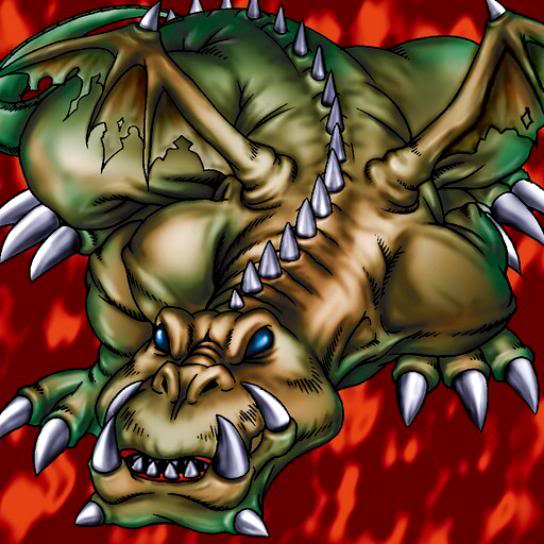

Crawling Dragon

STATS
ATK: 1600
DEF: 1400DECK COST
Deck Cost per Card: 30Fusion List (44 Possible Fusions)
- Crawling Dragon + Abyss Flower = B. Dragon Jungle King
- Crawling Dragon + Ameba = Kairyu-Shin
- Crawling Dragon + Ancient Jar = Stone D.
- Crawling Dragon + Arlownay = B. Dragon Jungle King
- Crawling Dragon + Armaill = Sword Arm of Dragon
- Crawling Dragon + Armed Ninja = Sword Arm of Dragon
- Crawling Dragon + Armored Zombie = Skelgon
- Crawling Dragon + Axe Raider = Sword Arm of Dragon
- Crawling Dragon + Bat = Metal Dragon
- Crawling Dragon + Blast Juggler = Cyber Saurus
- Crawling Dragon + Blue-Eyed Silver Zombie = Skelgon
- Crawling Dragon + Bolt Escargot = Twin-Headed Thunder Dragon
- Crawling Dragon + Bolt Penguin = Twin-Headed Thunder Dragon
- Crawling Dragon + Bone Mouse = Skelgon
- Crawling Dragon + Brave Scizzar = Metal Dragon
- Crawling Dragon + Change Slime = Kairyu-Shin
- Crawling Dragon + Clown Zombie = Skelgon
- Crawling Dragon + Cyber-Stein = Metal Dragon
- Crawling Dragon + Dark Plant = B. Dragon Jungle King
- Crawling Dragon + Darkworld Thorns = B. Dragon Jungle King
- Crawling Dragon + Dissolverock = Stone D.
- Crawling Dragon + Dorover = Kairyu-Shin
- Crawling Dragon + Dragoness the Wicked Knight = Sword Arm of Dragon
- Crawling Dragon + Electric Lizard = Twin-Headed Thunder Dragon
- Crawling Dragon + Electric Snake = Twin-Headed Thunder Dragon
- Crawling Dragon + Dragon Zombie = Curse of Dragon
- Crawling Dragon + Jellyfish = Kairyu-Shin
- Crawling Dragon + Jinzo #7 = Metal Dragon
- Crawling Dragon + Kaminari Attack = Twin-Headed Thunder Dragon
- Crawling Dragon + Kaminarikozou = Twin-Headed Thunder Dragon
- Crawling Dragon + LaLa Li-oon = Twin-Headed Thunder Dragon
- Crawling Dragon + Mega Thunderball = Twin-Headed Thunder Dragon
- Crawling Dragon + Megasonic Eye = Metal Dragon
- Crawling Dragon + Muka Muka = Stone D.
- Crawling Dragon + Oscillo Hero #2 = Twin-Headed Thunder Dragon
- Crawling Dragon + Phantom Ghost = Skelgon
- Crawling Dragon + Queen's Double = Sword Arm of Dragon
- Crawling Dragon + Rainbow Flower = B. Dragon Jungle King
- Crawling Dragon + Sanga of the Thunder = Twin-Headed Thunder Dragon
- Crawling Dragon + The Immortal of Thunder = Twin-Headed Thunder Dragon
- Crawling Dragon + Thunder Dragon = Twin-Headed Thunder Dragon
- Crawling Dragon + Time Wizard = Thousand Dragon
- Crawling Dragon + Tripwire Beast = Twin-Headed Thunder Dragon
- Crawling Dragon + Wow Warrior = Kairyu-Shin